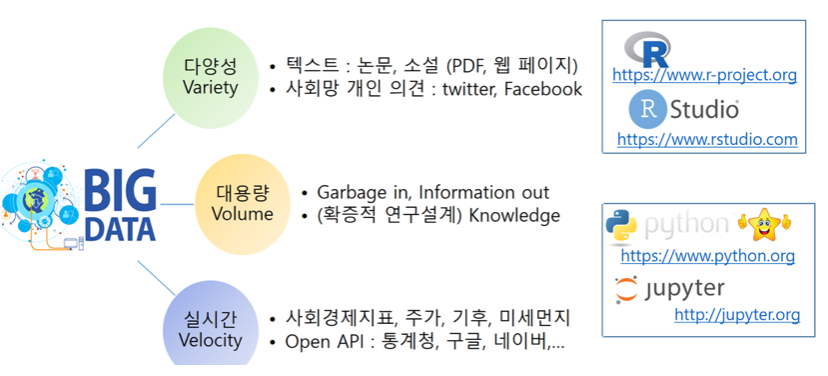
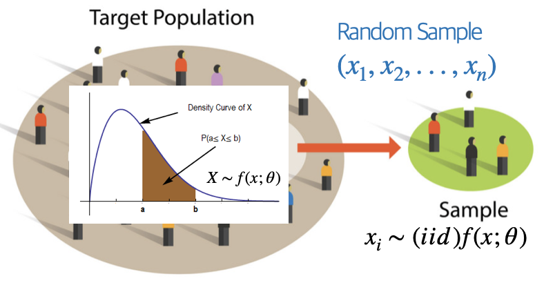
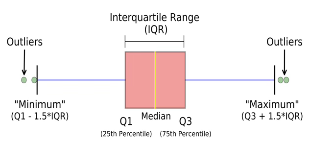
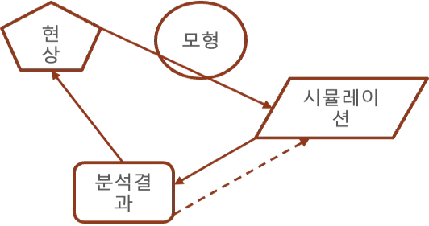

수리 통계 5. 확률 표본
chapter 1. 데이터와 확률표본
1. 데이터
실험을 통해 수집된 자료는 일반적으로 어떤 하나의 변수에 대한 여러 관측값으로 구성되며, 이러한 자료를 우리는 데이터(data)라고 한다. 데이터는 자연현상이나 사회현상에 대한 체계적 이해를 가능하게 해주는 가장 기초적인 재료이며, 과학적 탐구의 출발점이라 할 수 있다.
과학 이론은 때때로 아인슈타인의 상대성 이론처럼 탁월한 이론적 통찰이나, 케플러의 행성 궤도 법칙처럼 새로운 자연현상의 관찰, 또는 Student의 t-분포처럼 실험과 경험에서 비롯된 혁신적인 아이디어를 통해 탄생하기도 한다. 그러나 대부분의 경우 과학 이론은 관찰, 실험, 그리고 분석의 반복을 통해 점진적으로 정립된다. 이러한 과정에서 수집되고 해석되는 데이터는 과학적 주장과 이론의 정당성을 뒷받침하는 핵심적인 증거가 된다.
예를 들어, 벼 품종의 수량성을 높이기 위한 품종 개량 연구, 신약의 효과와 부작용을 평가하기 위한 임상시험, 혹은 산업 현장에서의 공정 개선 실험 등은 모두 체계적인 실험 설계에 따라 데이터를 수집하고 분석함으로써 유의미한 결론에 도달하게 된다. 이러한 연구들은 데이터의 수집과 활용이 단순한 관찰을 넘어서, 실질적인 과학적·기술적 진보를 이끌어낸다는 점을 잘 보여준다.
요약하면, 데이터란 실험이나 관찰을 통해 얻은 정량적 또는 정성적 측정값의 집합이며, 이는 과학적 이론을 정립하고 검증하는 데 필수적인 도구이다. 따라서 데이터에 대한 명확한 이해와 올바른 수집·분석 방법의 습득은 과학 연구 및 통계학 학습의 핵심이라 할 수 있다.
데이터(data)란 추론, 토론, 계산 등의 목적을 위해 활용되는 실제 정보의 집합으로, 일반적으로 측정값 또는 통계적 수치의 형태를 갖는 숫자들의 모임을 의미한다. 이러한 데이터는 관찰이나 실험을 통해 수집되며, 연구 가설의 검정이나 현상의 이해를 위한 객관적 근거로 기능한다. 즉, 데이터란 변수의 값을 수치 또는 범주 형태로 표현한 관측값들의 집합으로, 이는 모집단에 대한 추론이나 가설 검정 등의 통계적 분석의 기초 자료가 된다.
【정의】 통계학에서 분석의 대상이 되는 데이터는 일반적으로 행과 열로 구성된 숫자 행렬의 형태를 가진다. 이때 각 행은 하나의 개체 또는 관측 단위를 나타내며, 각 열은 해당 개체에 대해 측정된 변수(확률변수) 또는 특성을 의미한다. 이러한 데이터 행렬에서 행의 첨자는 서로 다른 개체를 구분하는 데 사용되며, 열의 첨자는 어떤 변수를 나타내는지를 구별하는 역할을 한다. 따라서 행렬의 각 원소는 특정 개체에 대해 특정 변수의 값을 의미하며, 분석은 이 구조를 기반으로 이루어진다.
\[\mathbf{X}n \times p = \begin{bmatrix} x11 & x_{12} & \cdots & x_{1p} \\ x_{21} & x_{22} & \cdots & x_{2p} \\ \vdots & \vdots & \ddots & \vdots \\ x_{n1} & x_{n2} & \cdots & x_{np} \end{bmatrix}\]
\(n\): 관측값의 수 (또는 개체 수)
\(p\): 변수의 수 (측정된 특성의 수)
\(x_{ij}\): i번째 개체의 j번째 변수에 대한 관측값
2. 데이터 수집 및 모형

Veracity(데이터 정확성) + Value(데이터 가치) = 5V of Big Data
데이터는 객관적인가? NO <- 수집되는 데이터는 목적이 있다. even 빅데이터 - 분석자의 의도없이 매초 단위로 엄청난 자동 저장되는 데이터도 일단 분석 대상이 되는 순간 그 데이터는 목적을 가지게 되므로 객관성을 상실한다.
데이터는 관심을 갖는 모집단 개체로부터 분석 대상 특성을 관측, 측정 등을 통하여 얻어지는 숫자(고전적 데이터), 문자(텍스트 마이닝), 음성, 이미지(빅데이터) 형식이다.

(전통적인 통계방법) 과학에서 이론이 제안되고 데이터 분석이 이루어지는 경우보다는 (빅데이터 통계방법)데이터로부터 새로운 이론이나 모형을 도출하는 경우가 많고 탐색적 자료 분석에 의해 제안된 이론이나 모형은 다시 확증적 방법에 의해 유의성이 (연구가설이 적합하다) 검증되므로 모형과 데이터는 순환 사이클을 갖는다.
통계적 모형은 과학적 진실이기 보다는 분석 대상이 되는 사실(현황)의 대표적 모형이다. 예를 들어, 회귀모형에서는 선형함수(모형)이 설명하지 못하는 오차항(e)이존재하고 이 오차항은 평균 0, 분산 \(\sigma^{2}\)인 정규분포를 따른다고 가정한다.
3. 데이터와 모집단
(1) 모집단과 확률변수
관심의 대상이 되는 개체 전체를 모집단이라 한다. 예를 들어 코스피 지수와 등록된 기업의 주가에 관심이 있다면 코스피 등록된 기업들이 모집단이 된다. 전국 대학생들의 흡연율, 일주일 공부시간, 폰에 저장된 친구 전화번호 개수에 관심이 있다면 조사시점 기준 대학에 등록한 대학생이 모집단이 된다.
모집단을 구성하는 개체의 관심 특성을 (확률)변수라 한다. 코스피 예제에서 확률변수는 주가(시작가, 최고가, 최저가, 종가)이고 관측은 일별(주 중 5일)로 관측된다. 주가는 연속형 확률변수이고 측정형이다. 시간적 측면에서는 시계열 데이터이다. 대학생 예제의 확률변수는 흡연여부, 일주일 공부시간이다. 흡연여부와 친구번호 개수는 이산형 확률변수, 공부시간은 연속형 확률변수이다.
(2) 모집단 관심 정보

모집단 관심 특성 확률변수의 모든 정보는 \(f(x;\theta)\), 확률분포함수와 모수로 요약된다. \(f(x)\)에 대하여 모르는 상황은 다음 2가지 중 하나이다.
모집단 확률분포함수 \(f(x)\)는 알려져 있지 않다.
\(f(x)\)의 형태는 모수 \(\theta\)까지는 알려져 있다.
일반적으로 \(f(x)\)에 대한 관심이보다는 요약값인 \(\theta\)에 관심을 가지므로 위의 (2) 상황에서 추론을 한다. (예) 가구소득은 로그정규분포를 따른다고 가정하고 평균과 표준편차에 대한 추론을 하게 된다.
모집단 확률분포함수 \(f(x)\)
모집단 확률변수에 대한 모든 정보는 확률분포함수를 얻으면 얻을 수 있다. 이산형 확률변수의 모집단 확률밀도함수는 베르누이 시행 가정 하에 구할 수 있지만 연속형 모집단 확률분포함수는 이론적으로 가정하거나 수집된 데이터(확률표본)로부터 얻을 수 있는데 이를 실증적 확률분포함수라 한다.
모수 \(f(x;\theta)\)
확률분포함수의 모든 개체의 관측값의 정보를 가지고 있으므로 모집단의 확률분포함수를 구할 수 있다면 모집단에 대한 원하는 정보를 얻을수 있다. 일반적으로 이산형 데이터 모집단에 대한 확률분포함수를 얻는 것은 가능하나 연속형인 경우에는 불가능하다. 그러므로 일반적으로 모집단 확률분포함수에 대하여는 가정하게 된다.
통계학은 모집단 개체 하나 하나의 정보에 관심을 갖기보다는 확률변수의 요약 특성(예를 들면 중앙위치, 흩어진 정도 등) 값에 관심을 갖는다. 이를 모수라 하고 \(\theta\)라 표현한다.
chapter 2. 확률표본 개념
1. 확률표본 정의 및 활용
(1) 확률표본 정의
확률변수 \(X_{1},\ldots,X_{n}\)이 다음 조건을 만족할 때, 이들을 모집단 \(f(x)\)로부터의 크기 n인 확률표본 random sample 이라 한다.
\(X_{1},\ldots,X_{n}\)은 서로 독립이며
각각의 \(X_{i}\)는 동일한 확률밀도함수 또는 확률질량함수를 갖는다.
이러한 확률변수들을 우리는 독립이고 동일한 분포(iid: independent and identically distributed)를 따르는 변수들이라고 하고 다음과 같이 표기한다. \(X_{1},\ldots,X_{n} \sim \text{iid}f(x)\)
모집단의 확률함수 \(f(x)\)가 어떤 모수 모형에 속한다고 가정할 수 있다면, 확률밀도함수는 \(f(x \mid \theta)\)의 형태로 표현될 수 있다. 이 경우 결합 확률함수는 다음과 같다. 여기서 동일한 모수 \(\theta\)가 모든 항에서 동일하게 사용된다.
\[f(x_{1},\ldots,x_{n} \mid \theta) = \overset{n}{\prod_{i = 1}}f(x_{i} \mid \theta)\]
통계적 분석에서는 모집단이 어떤 특정한 모수 모형에 속한다고 가정하되, 실제 모수 값 \(\theta\)는 미지수로 취급한다. 이러한 상황에서 임의표본은 위와 같은 형태의 결합 확률함수를 가지며, \(\theta\)는 모르는 상태로 남는다. 따라서 다양한 가능한 \(\theta\) 값을 고려함으로써, 서로 다른 모집단들로부터 추출된 임의표본이 어떻게 행동할지를 연구할 수 있다.
(2) 확률표본 활용
통계학에서는 확률변수, 확률변수의 관측치를 데이터(열, 변수x행, 관측치)라 하고 데이터가 가진 모든 정보는 확률밀도함수 \(f(x;\theta)\)에 의해 요약된다. 통계추론에서는 확률밀도함수를 요약하는 값을 모수(\(\theta\))라 하며 추론 관심 대상이 되는 값으로 모집단 평균, 분산, 비율 등이 대표적인 예이다. 확률밀도함수의 모수는 확률밀도함수의 형태를 결정한다.
예들 들어 이항분포의 모수는 실험 회수(\(n\))와 성공확률((\(p\))이고, 감마분포의 모수는 형태모수, \(\alpha\)와 비율모수, \(\beta\)이다. 모집단 모수는 \(\theta\)로 표현되고 \(\theta\) 값을 추정 estimation하거나 가설검정 hypothesis testing을 통계적 추론이라 하고 이를 위하여 모집단으로부터 확률표본(이를 데이터라 함)을 추출하게 된다.
확률표본으로부터 모수에 ”가장” 적절한 값, 통계량(확률표본의 함수, \(T = T(X_{1},X_{2},\ldots,X_{n})\))을 계산하고 이를 이용하여 추론 을 하게 된다. 통계적 추론에서 모집단의 확률밀도함수를 \(f(x;\theta),p(x;\theta)\)로 하여 모수 포함하여 표현한다.
\(f(x),p(x)\)의 형태는 알려져 있지 않다.
모수 \(\theta\)는 고정된 값이나 모른다. 베이지안 추론에서는 모수 \(\theta\)을 확률변수 하여 추론한다.
데이터_확률표본
\[(x_{1},x_{2},...,x_{n})\]
모집단
\[f(x;\theta)\]
통계량
\[\widehat{\theta} = h(x_{1},x_{2},...,x_{n})\]

(3) 확률표본 성질
확률표본의 확률분포함수는 모집단 확률분포함수와 동일하다.
i-번째 관측치 \(x_{i}\) 의 확률분포함수는 모집단의 확률분포 \(f(x;\theta)\) 와 동일하고 다른 관측치와 서로 독립이다.
확률표본 결합확률밀도함수 \(f(x_{1},x_{2},...,x_{n})\)
확률표본이 갖는 정보인 확률분포함수는 다음과 같이 구해지며 이를 확률표본 결합밀도함수라 한다.
\[f(x_{1},x_{2},...,x_{n}) = (independent)f(x_{1})f(x_{2})...f(x_{n})\]
\[= (identical)f(x;\theta)f(x;\theta)...f(x;\theta) = \lbrack f(x;\theta)\rbrack^{n}\]
모집단 확률분포함수 \(f(x)\)를 알지 못하므로 결합확률밀도함수도 알수 없다.
확률표본 결합확률밀도함수가 추정해야 하는 모수를 포함하고 있는 경우 이를 우도함수 likelihood function 라 한다.
【예제 ①】 확률변수 \(X_{1},\ldots,X_{n}\)이 평균이 \(\beta\)인 지수분포로부터 추출된 크기 n의 확률표본이라고 하자. 결합확률밀도함수는 다음과 같다.
\[f(x_{1},\ldots,x_{n} \mid \beta) = \overset{n}{\prod_{i = 1}}f(x_{i} \mid \beta) = \overset{n}{\prod_{i = 1}}\frac{1}{\beta}e^{- x_{i}/\beta} = \frac{1}{\beta^{n}}e^{- (x_{1} + \cdots + x_{n})/\beta}\]
만약 모든 \(X_{i}\)가 1 이상 값을 가질 확률은
\[P(X_{1} > 1,\ldots,X_{n} > 1) = \int_{1}^{\infty}\cdots\int_{1}^{\infty}\overset{n}{\prod_{i = 1}}\frac{1}{\beta}e^{- x_{i}/\beta}dx_{1}\cdots dx_{n}\]
\[= \left( \int_{1}^{\infty}\frac{1}{\beta}e^{- x/\beta}dx \right)^{n} = \left( e^{- 1/\beta} \right)^{n} = e^{- n/\beta}\]
2. 복원추출과 비복원추출
무한 모집단
앞에서 정의된 확률표본 모형은 때때로 무한 모집단으로부터의 표본추출로 간주된다. 예를 들어, \(X_{1},\ldots,X_{n}\)의 값을 순차적으로 얻는 과정을 생각해 보자. 먼저 실험을 수행하여 \(X_{1} = x_{1}\)이 관측되고, 다음으로 실험을 반복하여 \(X_{2} = x_{2}\)가 관측된다.
이때 무작위 표본추출에서의 독립성 가정은 \(X_{1} = x_{1}\)이 먼저 관측되었더라도 \(X_{2}\)의 확률분포에는 아무런 영향을 주지 않는다는 것을 의미한다. 다시 말해, \(x_{1}\)을 무한 모집단에서 ”제거”하더라도 모집단의 성질은 바뀌지 않기 때문에, \(X_{2} = x_{2}\) 역시 여전히 동일한 모집단에서의 무작위 추출로 간주된다.
유한모집단 복원추출
반면, 유한 모집단으로부터 표본을 추출하는 경우에는 실제 자료가 어떻게 수집되었는지에 따라 달라진다. 모집단의 크기가 유한한 \(N\)개일 때, 각 값이 동일한 확률 \(\frac{1}{N}\)로 선택되는 방식으로 표본을 추출한다고 하자. 선택된 첫 번째 값은 \(X_{1} = x_{1}\)로 기록된다. 그 다음 동일한 과정을 반복하여 \(X_{2} = x_{2}\)를 선택한다. 만약 동일한 값이 다시 선택된다면 \(x_{1} = x_{2}\)가 될 수도 있다. 이러한 표본추출 방식은 각 단계에서 선택된 값을 다시 모집단에 되돌려 놓는다는 의미에서 복원추출이라 부른다. 추출 선택 과정이 서로 영향을 미치지 않기 때문에\(X_{1},\ldots,X_{n}\)은 상호 독립이다.
유한모집단 비복원추출
비복원추출은 한 번 선택된 값은 이후의 선택에서 제외되는 방식이다. 처음에는 모집단 \(\{ x_{1},\ldots,x_{N}\}\)중 하나를 확률 \(\frac{1}{N}\)로 선택하여 \(X_{1} = x_{1}\) 로 기록한다. 그 다음 두 번째 값은 나머지 \(N - 1\)개의 값 중에서 선택되며, 각 값은 \(1/(N - 1)\)의 확률로 선택된다. 이런 방식으로 \(X_{1},\ldots,X_{n}\)까지 계속 선택해나간다. 하지만 한 번 선택된 값은 다시 선택되지 않으므로 중복은 허용되지 않으므로 \(P(X_{2} = y \mid X_{1} = y) = 0\) 상호 독립이 아니다.
하지만 흥미로운 점은, 이러한 경우에도 \(X_{1},\ldots,X_{n}\)은 여전히 동일한 분포를 따른다. 즉, 각각의 주변분포는 같다.
\(X_{1}\)의 경우, \(P(X_{1} = x) = \frac{1}{N}\)이다.
\(X_{2}\)의 주변확률분포: \(P(X_{2} = x) = \overset{N}{\sum_{i = 1}}P(X_{2} = x \mid X_{1} = x_{i}) \cdot P(X_{1} = x_{i})\)
이때 \(x_{i} = x\)인 경우, \(P(X_{2} = x \mid X_{1} = x) = 0\)
나머지 \(j \neq k\)일 때는 \(P(X_{2} = x \mid X_{1} = x_{j}) = \frac{1}{N - 1}\).
\(P(X_{2} = x) = (N - 1)\left( \frac{1}{N - 1} \cdot \frac{1}{N} \right) = \frac{1}{N}\) (동일분포)
다음 예제는 유한 모집단에서의 복잡한 정확 확률 계산을, 독립성이라는 가정 하에 단순한 곱셈식으로 근사할 수 있음을 보여주는 유용한 사례이다.
【예제 ②】 유한 모집단 \(\{ 1,2,\ldots,1000\}\)에서 표본을 추출한다고 하자. 이 모집단에서 크기 n = 10인 표본을 비복원 추출로 선택한다고 가정하고 \(P(X_{1} > 200,\ldots,X_{10} > 200)\)을 구해보자.
(독립성 가정) \(\left( P(X > 200) \right)^{10} = \left( \frac{800}{1000} \right)^{10} = 0.107374\)
(초기하분포) \(P(Y = 10) = \frac{\binom{800}{10} \cdot \binom{200}{0}}{\binom{1000}{10}} = 0.106164\)
chapter 3. 확률표본의 함수
확률표본 \(X_{1},\ldots,X_{n}\)이 주어졌을 때, 일반적으로 이 값들에 대한 어떤 요약값을 계산하게 된다. \(T(x_{1},\ldots,x_{n})\)
여기서 함수 \(T\)의 정의역은 확률벡터(\(X_{1},\ldots,X_{n}\))의 표본공간 전체를 포함한다. 함수 \(T\)는 확률변수의 함수이므로 확률변수가 된다.
표본 \(X_{1},\ldots,X_{n}\)이 독립이고 동일한 분포를 따른다는 구조적 단순성 덕분에, 이로부터 유도되는 확률변수 \(Y = T(X_{1},\ldots,X_{n})\)의 분포는 비교적 다루기 쉬운 편이다. 이러한 분포는 일반적으로 표본 안의 변수들의 분포로부터 유도되므로, 이를 샘플링 sampling 분포라 부른다. 여기서는 확률변수의 합(\(Y = \sum X_{i}\)) 형태로 정의되는 함수를 중심으로, 샘플링분포의 성질에 대해 논의할 것이다.
1. 통계량
【정의】 \(X_{1},\ldots,X_{n}\)이 어떤 모집단으로부터 크기 n인 임의표본이라고 하자. 또한 \(T(x_{1},\ldots,x_{n})\)이 표본공간 \(X_{1},\ldots,X_{n}\)을 정의역으로 갖는 실수값 또는 벡터값 함수라고 하자. \(Y = T(X_{1},\ldots,X_{n})\)으로 정의되는 확률변수 또는 확률벡터 \(Y\)를 통계량 statistic 이라 한다. 이 통계량 \(Y\)의 확률분포를 샘플링 분포라 한다.
통계량의 정의는 매우 폭넓지만, 단 하나의 제한 조건은 통계량은 모수의 함수가 될 수 없다는 점이다. 즉, 통계량은 오직 표본 데이터만을 기반으로 정의되어야 한다.
확률표본인 데이터로부터 실제 값이 계산되면 소문자 \(t\)로 표시하며 이를 모수 \(\theta \subseteq \Omega\)에 대한 점 추정량 point estimator 으로 사용한다.
통계량을 추정에 사용하면 추정량 , 가설 검정에 사용하면 검정통계량 이라 한다.
확률표본의 함수인 통계량도 확률변수의 함수이므로 확률변수이다. 그러므로 확률분포함수를 갖게 되므로 이를 샘플링분포라 한다.
확률변수의 선형함수의 평균과 분산
\((X_1, \ldots, X_n)\) 이 어떤 확률실험에서 얻어진 확률벡터(random vector)라고 하자. 우리는 종종 \(T = T(X_1, \ldots, X_n)=\sum_{i=1}^{n} a_i X_i,\) 과 같은 선형결합(linear combinations)에 관심을 갖는다.
【정리】 \(T = \sum_{i=1}^{n} a_i X_i\) 라고 하자. 또한 모든 \(i = 1, \ldots, n에 대해 E[|X_i|] < \infty\) 라고 하자. 그러면, \(E(T) = \sum_{i=1}^{n} a_i E(X_i)\).
【정리】 \(T = \sum_{i=1}^{n} a_i X_i\) 이고, \(W = \sum_{j=1}^{m} b_j Y_j\) 라고 하자. 만약 모든 \(i = 1, \ldots, n\) 에 대해 \(E[X_i^2] < \infty\), 그리고 모든 \(j = 1, \ldots, m\) 에 대해 \(E[Y_j^2] < \infty\) 라면,
\(\operatorname{Cov}(T, W) = \sum_{i=1}^{n} \sum_{j=1}^{m} a_i b_j \operatorname{Cov}(X_i, Y_j)\).
【따름정리】 \(T = \sum_{i=1}^{n} a_i X_i\) 라고 하자. 또한 모든 \(i = 1, \ldots, n에 대해 E[X_i^2] < \infty\) 라고 하자. 그러면, \(\operatorname{Var}(T) = \operatorname{Cov}(T, T) = \sum_{i=1}^{n} a_i^{2}\,\operatorname{Var}(X_i) \;+\; 2 \sum_{i<j} a_i a_j\, \operatorname{Cov}(X_i, X_j)\).
【따름정리】 만약 \(X_1, \ldots, X_n\) 이 서로 독립이며 유한한 분산을 가진 확률변수들이라면, \(\operatorname{Var}(T) = \sum_{i=1}^{n} a_i^{2}\, \operatorname{Var}(X_i)\).
2. 확률표본의 평균과 분산
【정의】 확률표본 \(\left( X_{1},X_{2},\ldots,X_{n} \right)\)의 함수 \(\overset{¯}{X} = \frac{1}{n}\sum_{i}^{n}X_{i}\)통계량을 표본평균이라 한다.
【정의】 확률표본 \(\left( X_{1},X_{2},\ldots,X_{n} \right)\)의 함수 \(S^{2} = \frac{1}{n - 1}\sum_{i}^{n}\left( X_{i} - \overset{¯}{X} \right)^{2}\)통계량을 표본분산이라 한다. \(\sum_{i}^{n}\left( x_{i} - \overset{¯}{x} \right)^{2} = \sum_{1}^{n}{x_{i}^{2} - n\overset{¯}{x}}\)
【정리】표본분산을 최소화 하는 \(a = \overset{¯}{x}\) 이다.
【정리】 평균 \(\mu\), 분산 \(\sigma^{2}\)인 모집단으로부터 확률표본 \(\left( X_{1},X_{2},\ldots,X_{n} \right)\)의 표본평균, 표본분산에 대하여 다음이 성립한다.
\[E\left( \overline{X} \right) = E\left( \frac{1}{n}\sum_{1}^{n}X_{i} \right) = \frac{1}{n}\sum_{i}^{n}{E\left( X_{i} \right) =}\frac{1}{n}\sum_{i}^{n}{\mu =}\mu\]
\[V\left( \overline{X} \right) = V\left( \frac{1}{n}\sum x_{i} \right) = (ind)\frac{1}{n^{2}}\sum V\left( X_{i} \right) = \frac{1}{n^{2}}\sum\sigma^{2} = \frac{\sigma^{2}}{n}\]
\[ES^{2} = \mathbb{E}\left( \frac{1}{n - 1}\left\lbrack \overset{n}{\sum_{i = 1}}X_{i}^{2} - n{\overline{X}}^{2} \right\rbrack \right) = \frac{1}{n - 1}\left( n\mathbb{E}\lbrack X_{1}^{2}\rbrack - n\mathbb{E}\lbrack{\overline{X}}^{2}\rbrack \right)\]
\[ES^{2} = \frac{1}{n - 1}\left( n(\sigma^{2} + \mu^{2}) - n\left( \frac{\sigma^{2}}{n} + \mu^{2} \right) \right) = \sigma^{2}\]
표본분산은 모집단 분산의 불편 추정량이다.
3. 샘플링 분포
확률표본 함수인 통계량 \(T = T\left( X_{1},X_{2},\ldots,X_{n} \right)\)확률밀도함수를 샘플링 분포라 한다.
통계량을 활용하여 가설검정하거나 신뢰구간 추정을 하려면 통계량의 확률분포함수를 알아야 한다. 통계량의 확률분포함수 \(f(x)\)의 샘플링 확률분포함수라 한다.
모집단의 확률분포=표본확률분포이나 샘플링 확률분포함수는 상이하다. 모집단의 확률분포함수는 몰라도 샘플링 확률분포함수는 알 수 있어, 이를 이용하여 추정과 검정을 한다.
(중심극한정리) 모집단의 확률분포함수와 무관하게 표본평균, 표본합의 확률분포함수는 정규분포에 근사한다.
【정리】 확률표본 \(X_{1},\ldots,X_{n}\)이 모멘트생성함수 \(M_{X}(t)\)를 갖는 모집단으로부터 추출되었다고 하자. 그렇다면, 표본평균 \(\overline{X} = \frac{1}{n}\overset{n}{\sum_{i = 1}}X_{i}\)의 모멘트생성함수는 \(M_{\overline{X}}(t) = \left\lbrack M_{X}\left( \frac{t}{n} \right) \right\rbrack^{n}\)이다.
【예제 ①】 확률표본 \(X_{1},\ldots,X_{n}\)이 \(\mathcal{N}(\mu,\sigma^{2})\) 분포를 따르는 모집단으로부터 추출되었다고 하자. 이때, 표본평균 \(\overline{X}\)의 모멘트생성함수는 다음과 같다.
\[M_{\overline{X}}(t) = \left\lbrack \exp\left( \mu \cdot \frac{t}{n} + \frac{\sigma^{2}(t/n)^{2}}{2} \right) \right\rbrack^{n} = \exp\left( n\left( \mu \cdot \frac{t}{n} + \frac{\sigma^{2}(t/n)^{2}}{2} \right) \right) = \exp\left( \mu t + \frac{\sigma^{2}}{2n}t^{2} \right)\]
이로부터, \(\overline{X} \sim \mathcal{N}\left( \mu,\frac{\sigma^{2}}{n} \right)\).
【예제 ②】 확률표본 \(X_{1},\ldots,X_{n}\)이 감마분포 \(\text{Gamma}(\alpha,\beta)\)를 따른다고 하자. 표본평균 \(\overline{X}\)의 모멘트생성함수는 다음과 같으므로 표본평균의 샘플링분포는 \(\overline{X} \sim \text{Gamma}(n\alpha,\beta/n)\) 또한 감마분포이다.
\[M_{\overline{X}}(t) = \left\lbrack \left( \frac{1}{1 - \beta(t/n)} \right)^{\alpha} \right\rbrack^{n} = \left( \frac{1}{1 - (\beta/n)t} \right)^{n\alpha}\]
【정리】 만약 \((X,Y)\)가 서로 독립이며 연속형 확률변수이고, 각각의 확률밀도함수가 \(f_{X}(x),f_{Y}(y)\)라고 하자. 그러면 이들의 합 \(Z = X + Y\)의 확률밀도함수는 다음과 같은 컨볼루션 convolution으로 주어진다. \(f_{Z}(z) = \int_{- \infty}^{\infty}f_{X}(w)f_{Y}(z - w)dw\)
【예제 ③】 독립인 코쉬 확률변수 \(U \sim \text{Cauchy}(0,\sigma),V \sim \text{Cauchy}(0,\tau)\)가 있을 때 \(U + V\)의 확률밀도함수는 \(\text{Cauchy}(0,\sigma + \tau)\)이다.
\[f_{U}(u) = \frac{1}{\pi\sigma} \cdot \frac{1}{1 + (u/\sigma)^{2}},f_{V}(v) = \frac{1}{\pi\tau} \cdot \frac{1}{1 + (v/\tau)^{2}}, - \infty < u,v < \infty\]
\[f_{Z}(z) = \int_{- \infty}^{\infty}\frac{1}{\pi\sigma} \cdot \frac{1}{1 + (w/\sigma)^{2}} \cdot \frac{1}{\pi\tau} \cdot \frac{1}{1 + \left( \frac{z - w}{\tau} \right)^{2}}dw\]
\[f_{Z}(z) = \frac{1}{\pi(\sigma + \tau)} \cdot \frac{1}{1 + \left( \frac{z}{\sigma + \tau} \right)^{2}}, - \infty < z < \infty\]
위치-척도 분포 \(X_{i} \sim \frac{1}{\sigma}f\left( \frac{x - \mu}{\sigma} \right)\) 가족으로부터 추출된 확률표본 합의 샘플링 분포는 동일 확률밀도함수를 가지며 위치 파라미터는 유지되고, 척도 파라미터는 단순히 더해진다. 코쉬분포의 합, 정규분포의 합, 감바분포의 합이 대표적인 예이다.
【정리】 확률표본 \(X_{1},\ldots,X_{n}\)가 다음의 지수족 모집단에서 추출되었다고 하자. \(f(x \mid \theta) = h(x)c(\theta)\exp\left( \overset{k}{\sum_{i = 1}}w_{i}(\theta)t_{i}(x) \right)\), 이때, 통계량 \(T_{1},\ldots,T_{k}\)를 \(T_{i}(X_{1},\ldots,X_{n}) = \overset{n}{\sum_{j = 1}}t_{i}(X_{j}),i = 1,\ldots,k\)와 같이 정의한다면, 이 통계량들의 결합분포는 다음과 같은 형태의 지수족이 된다.\(f_{T}(u_{1},\ldots,u_{k} \mid \theta) = H(u_{1},\ldots,u_{k})\lbrack c(\theta)\rbrack^{n}\exp\left( \overset{k}{\sum_{i = 1}}w_{i}(\theta)u_{i} \right)\)
이 정리는, 지수족으로부터 추출된 표본의 충분통계량 역시 지수족의 형태를 갖는 분포를 따른다는 중요한 결과를 제시한다.
【예제 ④】 확률표본 \(X_{1},\ldots,X_{n}\)이 \(Bernoulli(p)\)분포에서 추출되었다고 하자. \(T_{1}(X_{1},\ldots,X_{n}) = \overset{n}{\sum_{i = 1}}X_{i}\)는 충분통계량이다.\(k = 1,c(p) = 1 - p,w_{1}(p) = \log\left( \frac{p}{1 - p} \right),t_{1}(x) = x\)
chapter 4. 정규분포로부터의 확률표본
정규분포를 따르는 모집단은 여전히 가장 널리 사용되는 통계 모형 중 하나이며, 이로부터 표본을 추출하면 표본 통계량의 유용한 성질뿐 아니라, 잘 알려진 여러 셈플링 분포도 함께 유도된다. 통계 모형에 대한 추론은 정규분포를 가정하여 발전한 것과 무관하지 않다.
1. 표본평균과 표본분산의 샘플링 분포
【정리】 확률표본 \(X_{1},\ldots,X_{n}\)이 \(\mathcal{N}(\mu,\sigma^{2})\)분포에서 추출되었다고 하자. 표본평균 \(\overline{X} = \frac{1}{n}\overset{n}{\sum_{i = 1}}X_{i}\), 표본분산 \(S^{2} = \frac{1}{n - 1}\overset{n}{\sum_{i = 1}}(X_{i} - \overline{X})^{2}\)에 대하여 다음이 성립한다.
\(\overline{X}\)와 \(S^{2}\)는 서로 독립인 확률변수이다.
\(\overline{X} \sim \mathcal{N}(\mu,\sigma^{2}/n)\)
\((n - 1)S^{2}/\sigma^{2} \sim \chi^{2}(n - 1)\)
2. 카이제곱 확률변수에 대한 성질
【보조정리】
만약 \(Z\)가 표준정규분포 \(\mathcal{N}(0,1)\)를 따른다면, \(Z^{2}\)는 자유도 1인 카이제곱 분포를 따른다. \(Z^{2} \sim \chi_{1}^{2}\)
독립인 카이제곱 확률변수 \(X_{1},\ldots,X_{n}\)가 각각 자유도 \(p_{1},\ldots,p_{n}\)을 갖는다고 하자. 확률표본의 합은 \(X_{1} + \cdots + X_{n} \sim \chi_{p_{1} + \cdots + p_{n}}^{2}\)을 따른다.
3. 정규 변수들의 선형결합 간의 독립성 판별
【보조정리】 \(X_{j} \sim \mathcal{N}(\mu_{j},\sigma_{j}^{2}),j = 1,\ldots,n\)이 서로 독립이라고 하자. 상수 \(a_{ij},b_{rj}\)에 대해 \(i = 1,\ldots,k,r = 1,\ldots,m,j = 1,\ldots,n\), 단 \(k + m \leq n\)이라 하자. 다음과 같이 선형결합을 정의한다.
\(U_{i} = \overset{n}{\sum_{j = 1}}a_{ij}X_{j},i = 1,\ldots,k\), \(V_{r} = \overset{n}{\sum_{j = 1}}b_{rj}X_{j},r = 1,\ldots,m\)
- 두 확률변수 \(U_{i}\)와 \(V_{r}\)는 독립일 필요충분조건은 공분산이 0일 때이다. \(U_{i}\bot V_{r} \Longleftrightarrow \text{Cov}(U_{i},V_{r}) = 0\). 공분산은 다음과 같이 계산된다. \(\text{Cov}(U_{i},V_{r}) = \overset{n}{\sum_{j = 1}}a_{ij}b_{rj}\sigma_{j}^{2}\)
- 벡터 \((U_{1},\ldots,U_{k})\)와 \((V_{1},\ldots,V_{m})\)이 상호 독립이기 위한 필요충분조건은 모든 \(i = 1,\ldots k,\)와 \(r = 1,\ldots,m\)에 대하여 \(U_{i}\bot V_{r}\)이다. 즉, 각 쌍의 선형결합이 모두 독립일 때, 전체 벡터도 독립이다.
표본평균 \(\overline{X}\)와 표본분산 \(S^{2}\)의 독립성 증명
분산분석(ANOVA)에서 독립성 증명: 집단 간 제곱합(SSB)과 집단 내 제곱합(SSW)이 독립임을 보일 때 유용하다. 즉, F-분포의 분자와 분모가 독립이라는 성질을 확인할 때 자주 등장한다.
회귀분석에서 잔차(residual)와 추정량의 독립성: 예측값과 오차항이 독립이라는 성질을 정규 가정하에서 보장할 때 사용된다.
고급 통계 이론 및 추정량의 분산 계산: 선형 추정량의 분산 공식을 도출하거나, 선형 회귀에서 BLUE(최선선형불편추정량) 조건을 분석할 때도 활용된다.
다변량 정규분포의 성질 분석: 독립성 조건을 갖는 여러 선형변환 결과들이 서로 독립이 되는지 판단할 때.
4. 정규분포로부터 유도된 분포
(1) t-분포
위에서 유도한 분포들은, 정규성을 가정한 통계 분석의 출발점으로 매우 중요하다. 실제로, 대부분의 실제 통계 분석 상황에서는 모분산 \(\sigma^{2}\)의 값을 알지 못한다. 따라서, 모평균 \(\mu\)에 대한 추론을 위해 \(\overline{X}\)의 변동성을 이해하려면 우선 \(\sigma^{2}\)를 추정해야 한다. 이 주제는 1900년대 초, W. S. Gosset에 의해 처음으로 연구되었으며, 그는 Student라는 필명으로 논문을 발표하였다. Student의 업적은 오늘날 우리가 t 분포라 부르는 Student의 t 분포로 이어졌다.
정규분포 \(N(\mu,\sigma^{2})\)로부터의 확률표본 평균 \(\overline{X}\)에 대하여 다음이 성립한다. \(\frac{\overline{X} - \mu}{\frac{\sigma}{\sqrt{n}}} \sim N(0,1)\). 여기서 모집단 표준편차 \(\sigma\) 값을 안다면 모평균 \(\mu\)에 대한 추론이 가능하다. 그러나 만약 \(\sigma\) 값을 모른다면 가정하에 t-분포가 유도되었다.
\[\frac{\overline{X} - \mu}{\frac{S}{\sqrt{n}}} = \frac{\left( \overline{X} - \mu \right)/(\sigma/\sqrt{n})}{\sqrt{S^{2}/\sigma^{2}}} = \frac{N(0,1)}{\sqrt{\chi_{n - 1}^{2}/(n - 1)}} \sim t(n - 1)\]
(2) F-분포
통계적 추론에서 우리는 종종 두 개 이상의 모집단을 비교해야 하는 상황에 놓이게 된다. 특히, 여러 집단 간 평균이 서로 동일한지 검정하고자 할 때, 단순히 두 집단만을 비교하는 t-검정만으로는 충분하지 않다. 예를 들어, 세 가지 종류의 약물이 혈압에 미치는 영향을 비교하고자 한다면, 각 약물 그룹의 평균 혈압을 비교해야 하고, 이를 위해 분산분석(ANOVA)이 사용된다.
F-분포는 영국의 통계학자 Ronald A. Fisher에 의해 도입되었다. 그는 1920년대 농업 실험을 설계하면서, 여러 가지 비료의 효과를 비교하는 문제에 직면하였고, 이를 해결하기 위해 집단 간 변동과 집단 내 변동의 비율을 비교하는 통계량이 필요했다. 이렇게 하여 F-검정과 분산분석 기법이 탄생하게 되었고, 그 기반이 되는 확률분포가 F-분포이다. 분산분석의 핵심은 전체 변동(총제곱합)을 집단 간 변동(처리 제곱합)과 집단 내 변동(오차 제곱합)으로 분해하고, 이들 제곱합을 자유도로 나눈 평균제곱(mean square)의 비율을 통해 유의성을 검정하는 데 있다. 이때 사용되는 검정통계량이 바로 F-분포를 따르는 통계량이다.
【정의】 두 독립적인 정규 모집단에서 각각 다음과 같은 표본을 추출한다고 하자.
\(X_{1},\ldots,X_{n} \sim \mathcal{N}(\mu_{X},\sigma_{X}^{2})\), \(Y_{1},\ldots,Y_{m} \sim \mathcal{N}(\mu_{Y},\sigma_{Y}^{2})\)
이때, 표본분산들 \(S_{X}^{2},S_{Y}^{2}\)를 사용하여 다음과 같은 통계량을 정의한다.
\(F = \frac{(S_{X}^{2}/\sigma_{X}^{2})}{(S_{Y}^{2}/\sigma_{Y}^{2})}\). 이때 이 \(F\)는 자유도 \(n - 1\)과 \(m - 1\)을 갖는 Snedecor의 \(F\)-분포를 따른다.
【정리】
만약 \(X \sim F_{p,q}\) 라면, 그 역수인 \(1/X \sim F_{q,p}\)를 따른다.
만약 \(X \sim t_{q}\)이면, \(X^{2} \sim F_{1,q}\)이다.
만약 \(X \sim F_{p,q}\)이면, \(\frac{(p/q)X}{1 + (p/q)X} \sim \text{Beta}\left( \frac{p}{2},\frac{q}{2} \right)\)이다.
chapter 5. 순서통계량
확률표본에서 가장 작거나 큰 값, 또는 중앙값과 같은 관측값들은 단순한 평균이나 분산 외에도 중요한 요약 정보를 제공할 수 있다. 예를 들어, 지난 50년간 기록된 최대 홍수 수위나 최저 기온은 향후 재난 예방과 대비에 유용한 기준이 될 수 있으며, 지난달 주택의 중위 가격은 생활비나 주거비용을 추정하는 데 실질적인 참고 자료가 된다.
평균과 중앙값은 서로 관련되어 있지만, 측정하는 특성과 해석의 관점에서는 분명한 차이가 있다. 이를 이해하기 위해 서울 아파트 가격을 예로 들어보자.
일부 부동산 정책 입안자들은 “서울 아파트의 평균 매매 가격이 14억 원이므로 현재의 금융 조건이나 세금 정책은 타당하다”고 주장한다. 그러나 많은 실수요자들은 “실제로는 절반 이상의 거래가 9억 원 이하에서 이뤄지고 있으며, 15억 원 이상의 고가 아파트는 강남권 등 특정 지역에만 집중되어 있다”고 말한다. 실제로 몇 채의 초고가 아파트만으로도 전체 평균 가격이 크게 상승할 수 있다.
이처럼 평균은 극단값(outliers)에 민감하게 반응하여 대표값으로서 왜곡될 수 있으며, 중앙값은 보다 전형적인 거래 수준을 반영해 실생활과 정책 판단에 더 유용한 지표가 될 수 있다.
1. 순서통계량 정의
【정의】 이러한 값들은 모두 순서통계량 order statistics 이라 불리며, 자료의 크기 순서에 따라 결정되는 통계량이다. 모집단 \(f(x),x \in S = \left\{ x;a < x < b \right\}\)으로부터의 확률표본 \((X_{1},X_{2},\ldots,X_{n})\) 크기 순으로 정렬하고 \(X_{(1)} \leq X_{(2)} \leq \ldots \leq X_{(n)}\) 이를 순서 통계량이라 한다.
최소값 minimum value : \(X_{(1)} = \min_{i}{(x_{1},x_{2},\ldots,x_{n})}\)
최대값 maximum value : \(X_{(n)} = \max_{i}{(x_{1},x_{2},\ldots,x_{n})}\)
범위 range : \(R = X_{(n)} - X_{(1)}\)
중앙값 median : \(P(X \leq {\overset{˜}{x}}_{m}) = \frac{1}{2}\)을 만족하는 \({\overset{˜}{x}}_{m}\)이다.
표본 데이터 중앙값 : \(M = \{\begin{matrix} X_{((n + 1)/2)} & \text{if}n\text{is odd} \\ & \\ \frac{1}{2}\left( X_{(n/2)} + X_{(n/2 + 1)} \right) & \text{if}n\text{is even} \end{matrix}\)
【정의】 백분위값 percentile은 주어진 값보다 작은 관측값의 비율을 나타내는 중요한 지표이다. 0과 1 사이의 어떤 수 \(p\)에 대해, 샘플에서의 \((100p)\%\)백분위는 전체 표본 중 약 \(np\)개의 관측값이 그 값보다 작고, 약 \(n(1 - p)\)개의 관측값이 그 값보다 큰 위치에 있는 값으로 정의된다. \(Q_{p} = F^{- 1}(p)\)
샘플에서의 \(100p\)번째 백분위는 다음 관측값으로 정의된다.
\(p\)가 \(\frac{1}{2n} < p < 0.5\) 범위: \(X_{(np)}\)
- \(0.5 < p < 1 - \frac{1}{2n}\) 범위 : \(X_{(n + 1 - n(1 - p))}\)
표본 백분위
표본 데이터의 \(p\)th백분위수는 \(k = (n + 1)p\)가 정수이면 \(X_{(k)}\)이나 실수인 경우에는 다음 방법으로 구한다. \((n + 1)p = k + r,0 < r < 1\), \(r\)은 소수 부분으로 가중치로 사용된다. \(p\)th백분위수 : \((1 - r)X_{(k)} + rX_{(k + 1)}\)
2. 순서 통계량 결합, 주변 확률밀도함수
순서통계량 \(X_{(1)},X_{(2)},\ldots,X_{(n)}\)의 결합 확률밀도함수는 다음과 같다.
【정리】 \[f_{X_{(1)},\ldots,X_{(n)}}(x_{1},\ldots,x_{n}) = \{\begin{matrix} n! \cdot f_{X}(x_{1})\cdots f_{X}(x_{n}), & \text{if} - \infty < x_{1} < \cdots < x_{n} < \infty \\ 0, & \text{otherwise} \end{matrix}\]
【정리】 \(X_{(1)},\ldots,X_{(n)}\)을 확률표본 \(X_{1},\ldots,X_{n}\)의 순위통계량이라 하자. 이 확률표본은 누적분포함수\(F_{X}(x)\), 확률밀도함수 \(f_{X}(x)\)를 갖는 연속 분포에서 추출된 것이다. 이때, \(X_{(j)}\)의 확률밀도함수는 다음과 같다.
\[f_{X_{(j)}}(x) = \frac{n!}{(j - 1)!(n - j)!}f_{X}(x)\lbrack F_{X}(x)\rbrack^{j - 1}\lbrack 1 - F_{X}(x)\rbrack^{n - j}\]
최대값 확률밀도함수 : \(f_{X_{(n)}}(x) = nF(x)^{n - 1}f(x)\)
최소값 확률밀도함수 : \(f_{X_{(1)}}(x) = n(1 - F{(x))}^{n - 1}f(x)\)
\(1 \leq i < j \leq n\)일 때, 순위통계량 \(X_{(i)},X_{(j)}\)의 결합 확률밀도함수는 다음과 같다.
\[f_{X_{(i)},X_{(j)}}(u,v) = \frac{n!}{(i - 1)!(j - 1 - i)!(n - j)!}f_{X}(u)f_{X}(v)\lbrack F_{X}(u)\rbrack^{i - 1}\lbrack F_{X}(v) - F_{X}(u)\rbrack^{j - 1 - i}\lbrack 1 - F_{X}(v)\rbrack^{n - j}\]
3. 상자수염그림
사분위 quartile
표본 데이터의 \(p = 25,50,75\)인 순서 통계량을 1사분위수 first quartile(\(Q_{1}\)), 2사분위수 second quartile(\(Q_{2}\)), 3사분위수 third quartile(\(Q_{13}\))이라 한다. 2사분위수를 중앙값 median이라 한다.
- 사분위 범위 inter-quartile range : \({IQR = Q}_{3} - Q_{1}\)
상자 수염 그림 box whisker plot

5개 요약 통계량 표현 : (최소값, 1사분위, 중앙값, 3사분위, 최대값)
하한 펜스 lower fence : \(Q_{1} - 1.5IQR\)
상한 펜스 upper fence : \(Q_{3} + 1.5IQR\)
상한, 하한 펜스를 벗어나는 값들을 이상치 outlier 라 한다. 1.5 대신 3을 사용하면 극심한 severe 이상치라 진단한다.
chapter 6. 수렴개념
1. 확률수렴
표본크기가 무한대(이론적이고 가상적인 개념)로 접근하는 경우 표본 통계량의 변화에 대한 내용을 다룬다.
【확률수렴】 \(X_{n}\overset{P}{\rightarrow}X\)
\(\{ X_{n}\}\) 확률변수 시퀀스, \(X\) 확률변수일 때 다음을 만족하면 \(X_{n}\)은 \(X\)에 확률 수렴한다고(\(X_{n}\) convergence in probability) 정의한다.
\(\lim_{n \rightarrow \infty}{P\left( \left| X_{n} - X \right| \geq \epsilon \right) = 0forall\epsilon > 0}\) ⬄
\(\lim_{n \rightarrow \infty}{P\left( \left| X_{n} - X \right| < \epsilon \right) = 1forall\epsilon > 0}\)
(WLLN weak law of large numbers) \(\{ X_{n}\}\)은 평균 \(\mu\), 분산 \(\sigma^{2} < \infty\)을 갖는iid 확률변수 시퀀스라 하면 표본평균(\({\overset{¯}{X}}_{n}\))은 평균(\(\mu\))에 확률 수렴한다. \({\overset{¯}{X}}_{n}\overset{P}{\rightarrow}\mu\)
\(E\left( {\overset{¯}{X}}_{n} \right) = \mu,V\left( {\overset{¯}{X}}_{n} \right) = \frac{\sigma^{2}}{n}\)이므로 Chebyshev inequality 정리 \(P\left( |X - \mu| > k\sigma \right) \leq \frac{1}{k^{2}}\)에 의해 다음이 성립한다.
\(P\left( \left| {\overset{¯}{X}}_{n} - \mu \right| \geq \epsilon \right) = P\left( \left| \overset{¯}{X_{n}} - \mu \right| \geq (\epsilon\sqrt{n}/\sigma)(\sigma/\sqrt{}n) \right) \leq \frac{\sigma^{2}}{n\epsilon^{2}} \rightarrow 0\)
【정리】 \(X_{1},X_{2},\ldots\)이 확률변수 \(X\)에 확률 수렴 하면 연속함수 \(g\)에 대하여 \({g(X}_{1}),g(X_{2}),\ldots\)은 \(g(X)\)에 확률 수렴한다. \(X_{n}\overset{P}{\rightarrow}X\) 이면 \({g(X}_{n})\overset{P}{\rightarrow}g(X)wheregiscontinuousfunction\).
【정리】 \(X_{n}\overset{P}{\rightarrow}X,Y_{n}\overset{P}{\rightarrow}Y\) 이면 \({X_{n}Y}_{n}\overset{P}{\rightarrow}XY\)
【정의】 확률분포함수 \(F(x;\theta)\)를 갖는 모집단으로부터 확률표본 \(X_{1},X_{2},\ldots,X_{n}\)의 통계량 \(T_{n} = t(x_{1},x_{2},\ldots,x_{n})\)이 다음을 만족하면 모수 \(\theta\)의 일치 추정량이라 한다.
\(T_{n}\overset{P}{\rightarrow}\theta\) ⬄ 표본평균은 모평균의 일치 추정량이다.
【예제 ①】 \(\{ X_{n}\}\)은 평균 \(\mu\), 분산 \(\sigma^{2} < \infty\)을 갖는 확률표본 시퀀스라 하자. 표본분산 \(S_{n}^{2} = \frac{1}{n - 1}\sum_{i}^{n}{(X_{i} - {\overset{¯}{X}}_{n})}\)은 모집단 분산 \(\sigma^{2}\)의 일치 추정량 이다. \(S_{n}^{2}\overset{P}{\rightarrow}\sigma^{2}\)
\(S_{n}^{2} = \frac{1}{n - 1}\sum_{i}^{n}{\left( X_{i} - {\overset{¯}{X}}_{n} \right)^{2} = \frac{n}{n - 1}(\frac{1}{n}\sum_{i}^{n}{X_{i}^{2} - {\overset{¯}{X}}_{n}^{2}})\overset{P}{\rightarrow}1\left( E\left( X^{2} \right) - \mu^{2} \right) = \sigma^{2}}\) 표본분산은 모분산 일치 추정량 이다.
2. 거의 확실한 수렴 ALL sure convergence
【정의】 \(\{ X_{n}\}\) 확률변수 시퀀스, \(X\) 확률변수일 때 다음을 만족하면 \(X_{n}\)은 \(X\)에 거의 확실한 수렴을 한다고 정의한다. \(P\left( \underset{n \rightarrow \infty}{lim}\left| X_{n} - X \right| < \epsilon \right) = 1forall\epsilon > 0\)
【정의】 평균 \(\mu\), 분산 \(\sigma^{2} < \infty\)을 갖는 확률표본 평균 \({\overset{¯}{X}}_{n}\)은 평균에 거의 확실히 수렴한다. (강한 대수의 법칙)
\(P\left( \underset{n \rightarrow \infty}{lim}\left| {\overset{¯}{X}}_{n} - \mu \right| < \epsilon \right) = 1forall\epsilon > 0\)
3. 분포 수렴 convergence in distribution
【정의】 \(\{ X_{n}\}\) 확률변수 시퀀스, \(X\) 확률변수이고 \(F_{X_{n}},F_{X}\) 각각 \(X_{n},X\) 확률분포함수일 때 다음을 만족하면 \(X_{n}\)은 \(X\)에 분포 수렴한다고 정의한다. \(X_{n}\overset{D}{\rightarrow}X\)
\(\lim_{n \rightarrow \infty}{F_{X}}_{n}(x) = F_{X}(x)forallx \in C(F_{X})\).
확률변수 \(X\)의 분포를 \(X_{n}\)의 한계 limiting asymptotic 분포라 한다.
【정리】 \(X_{n}\) 확률변수 시퀀스가 \(X\) 확률변수에 확률 수렴하면 \(X_{n}\)은 \(X\)에 분포 수렴한다. \(ifX_{n}\overset{P}{\rightarrow}X,thenX_{n}\overset{D}{\rightarrow}X\).
【예제】 \(X_{1},X_{2},\ldots\)은 \(U(0,1)\)으로부터 확률표본이다. 최대값 \(X_{(n)}\)의 극한 분포를 구하라.
\(U(0,1)\) 로부터 확률표본 이므로 \(n \rightarrow \infty\)로 가면 \(X_{(n)}\)은 1에 근사해야 한다.
\[P\left( \left| X_{(n)} - 1 \right| \geq \epsilon \right) = P\left( X_{(n)} \geq 1 + \epsilon \right) + P\left( X_{(n)} \leq 1 - \epsilon \right) = P\left( X_{(n)} \leq 1 - \epsilon \right)\]
확률표본 이므로 \(P\left( X_{(n)} \leq 1 - \epsilon \right) = \Pi_{i}^{n}P\left( X_{i} \leq 1 - \epsilon \right) = (1 - \epsilon)^{n}\)
만약 \(\epsilon = \frac{t}{n}\)라 놓으면 \(P\left( X_{(n)} \leq 1 - \frac{t}{n} \right) = \left( 1 - \frac{t}{n} \right)^{n} \rightarrow e^{- t}\) 이다.
\(P\left( {n(1 - X}_{(n)}) \leq t \right) \rightarrow e^{- t}\) 이므로 \({n(1 - X}_{(n)})\) 극한 분포는 \(\beta = 1\)인 지수분포이다.
【극한 확률분포함수】
\(X_{n}\) 의 확률밀도함수를 이용하여 극한 확률분포함수를 구하는 것은 쉽지 않아 누적 확률분포함수를 이용하는 것이 편리하다.
\(X_{n}\) 확률밀도함수를 \(p_{n}(x) = \left\{ \begin{array}{r} 1,x = 2 + \frac{1}{n} \\ 0,otherwise \end{array} \right.\ \)이라 하자.
극한 확률밀도함수는 \(\lim_{n \rightarrow \infty}{p_{n}(x) = 0}forallx\), 즉 극한 확률밀도함수가 존재하지 않는다. \(X_{n}\) 누적 확률분포함수는 \(F_{n}(x) = \left\{ \begin{array}{r} 0,x < 2 + \frac{1}{n} \\ 1,x \leq 2 + \frac{1}{n} \end{array} \right.\ \)이므로 극한 확률분포함수는 \(F(x) = \left\{ \begin{array}{r} 0,x < 2 \\ 1,x \leq 2 \end{array} \right.\ \) 이다.
【중심극한정리 central limit theorem】
\(X_{1},X_{2},\ldots\)은 평균, 분산이 \(E\left( X_{i} \right) = \mu < \infty,V\left( X_{i} \right) = \sigma^{2} < \infty\) 로부터 확률표본이다. \(\frac{\sqrt{n}({\overset{¯}{X}}_{n} - \mu)}{\sigma}\)의 극한분포는 표준정규분포이다.
【예제】 \(X_{1},X_{2},\ldots\)은 평균, 분산이 \(E\left( X_{i} \right) = p,V\left( X_{i} \right) = p(1 - p)\)인 베르누이분포 로부터 확률표본이다. 표본비율 \(\overset{\hat{}}{p} = \frac{\sum x_{i}}{n}\)의 극한 분포는 중심극한 정리에 의해 \(\frac{\sqrt{n}\left( \overset{\hat{}}{p} - p \right)}{p(1 - p)}\overset{D}{\rightarrow}N(0,1)\) 이다.
【예제】 \(X_{1},X_{2},\ldots,X_{n}\)은 \(NB(r,p)\)의 확률표본이라 하면 \(E\left( X_{i} \right) = \frac{r(1 - p)}{p},V\left( X_{i} \right) = \frac{r(1 - p)}{p^{2}}\) 이므로
중심극한정리에 의해 \(\frac{\sqrt{n}({\overset{¯}{X}}_{n} - r(1 - p)/p)}{\sqrt{r(1 - p)/p^{2}}}\) 극한분포는 정규분포에 근사한다.
【\(\Delta\)-method theorem】
\(X_{n}\) 시퀀스에 대하여 \(\sqrt{n}\left( X_{n} - \theta \right)\overset{D}{\rightarrow}N(0,\sigma^{2})\) 이며 \(g(x)\)가 미분 가능한 연속형 함수이면 \(g(X_{n})\) 시퀀스에 대하여 \(\sqrt{n}\left( {g(X}_{n}) - g(\theta) \right)\overset{D}{\rightarrow}N(0,\sigma^{2}\left( g'(\theta) \right)^{2})\)이 성립한다.
【예제】 \(X_{n}\)은 평균, 분산이 \(E\left( X_{i} \right) = p,V\left( X_{i} \right) = p(1 - p)\)인 베르누이분포로부터 확률표본이다.
\(X_{n} = \overset{\hat{}}{p} = \frac{\sum x_{i}}{n}\)이므로 \(\frac{\sqrt{n}\left( \overset{\hat{}}{p} - p \right)}{p(1 - p)}\overset{D}{\rightarrow}N(0,1)\)
오즈비 \(\frac{p}{1 - p}\) 추정한다고 하자. \(X_{n} = \frac{\overset{\hat{}}{p}}{1 - \overset{\hat{}}{p}}\)이고 \(g(p) = \frac{p}{1 - p}\)이다. \({E(X}_{n}) = \frac{p}{1 - p}\), \(V\left( \frac{\overset{\hat{}}{p}}{1 - \overset{\hat{}}{p}} \right) \approx \left\lbrack g'(p) \right\rbrack^{2}V\left( \overset{\hat{}}{p} \right) = \left\lbrack \frac{1}{(1 - p)^{2}} \right\rbrack^{2}\frac{p(1 - p)}{n} = \frac{p}{n(1 - p)^{3}}\)
\(\sqrt{n}\left( X_{n} = \frac{\overset{\hat{}}{p}}{1 - \overset{\hat{}}{p}} - g(p) \right)\overset{D}{\rightarrow}N(0,\frac{p}{n(1 - p)^{3}})\).
chapter 7. 확률표본 생성 : 시뮬레이션
확률변수의 특성을 설명하기 위한 다양한 방법들—변환, 분포, 적률 계산, 극한 정리를 다루었다.이러한 확률변수들은 실제 현상을 설명하고 모형화하는 데 사용되며, 이 변수들에 대한 관측값이 우리가 수집하는 데이터가 된다.
1. 개념
정의
관심 대상인 사회현상이나 자연현상에 대한 통찰력을 얻기 위한 시스템 모델링, 실체적 혹은 추상적인 시스템(프로세스)의 주요 특성을 정형화하여 임의 공간에서 모방 실현하는 것을 의미한다.
필요성
수학 모형의 해를 대수적 처리 불가능, 근사 해, 현실에서 실행이 불가능할 때, 새로운 정책 효과 측정, 우주 비행 시 발생 문제 예측, 효율성: 비용과 시간 측면, 모의 비행, 교통 신호 체계 변환, 콜 센터/은행 창구 적정 서비스 직원 수

난수생성과 시뮬레이션
난수 생성과 시뮬레이션은 매우 밀접한 관계를 가지고 있다. 시뮬레이션을 수행할 때 현실 세계의 복잡한 현상을 모델링하고 예측하기 위해 무작위한 요소를 포함하는 것이 중요한데 이것이 바로 난수 생성이 시뮬레이션에 사용되는 주된 이유 중 하나이다.
불확실성 모델링: 현실 세계의 많은 요소들은 불확실성을 내포하고 있는데 이러한 불확실성을 모델링하기 위해 난수가 사용될 수 있다. 날씨 예보 시뮬레이션에서는 다양한 요인들에 따라 다른 결과가 발생할 수 있으며 이를 모델링하기 위해 난수를 사용할 수 있다.
테스트 및 검증: 복잡한 모델이나 알고리즘을 시뮬레이션하고 검증할 때, 난수는 다양한 상황을 시뮬레이션하는 데 사용될 수 있다. 자율 주행 자동차의 시뮬레이션에서는 다양한 운전 상황을 난수를 사용하여 시험할 수 있다.
결과의 변동성 도입: 난수를 사용하여 모델의 결과에 변동성을 도입할 수 있는데 재무 모델링에서는 주식 시장의 랜덤한 움직임을 모델링하기 위해 난수를 사용할 수 있다.
몬테카를로 시뮬레이션: 몬테카를로 시뮬레이션은 무작위 샘플링을 사용하여 복잡한 문제의 근사해를 찾는 데 사용하는데 시뮬레이션에서는 난수가 필수적으로 사용된다.
난수 생성은 이러한 시뮬레이션 과정에서 중요한 요소입니다. 올바른 난수 생성은 시뮬레이션 결과의 정확성과 신뢰성을 보장하는 데 도움이 되므로 신뢰할 수 있는 난수 생성 알고리즘과 적절한 난수 분포 선택이 필요하다.
시뮬레이션을 통한 근사 계산 (법칙을 활용한 검증)
통계 추론은 우리는 모집단 분포 \(f(x|\theta)\)로부터 확률변수 \(X_{1},\ldots,X_{n}\)을 관측하고 그 분포의 특성을 이용하여 이 변수들의 행동을 설명하고자 한다. 여기서는 그와 반대로, 주어진 분포 \(f(x|\theta)\)로부터 무작위 확률표본 \(X_{1},\ldots,X_{n}\)을 생성하는 방법에 초점을 둔다.
【예제】 전구 수명이 지수분포 \(\text{Exponential}(\lambda)\)를 따르는다고 하자. 생산된 전구 \(c\)개의 부품 중 적어도 \(t\)개 이상이 \(h\)시간 이상 작동할 확률을 구한다고 하자.
\[\begin{matrix} p_{1} & = P(\text{부품이}h\text{시간 이상 작동}) \\ & = P(X \geq h \mid \lambda) \end{matrix}\]
\[\begin{matrix} p_{2} & = P(\text{적어도}t\text{개 이상의 부품이}h\text{시간 이상 작동}) \\ & = \overset{c}{\sum_{k = t}}\binom{c}{k}p_{1}^{k}(1 - p_{1})^{c - k} \end{matrix}\]
\(p_{1} = \int_{h}^{\infty}\frac{1}{\lambda}e^{- x/\lambda}dx = e^{- h/\lambda}\)이 계산 가능하다면 \(p_{2}\) 확률 계산도 용이하다.
위의 예제에서 \(p_{2}\) 계산이 불가능한 경우 원하는 분포를 따르는 확률변수들을 시뮬레이션을 통해 생성한 후, 대수의 법칙을 이용하여 그 시뮬레이션의 타당성을 검증하는 것이다.
어떤 확률 변수 \(X\)에 대해 함수 \(h(Y)\)의 기대값을 알고 싶은데,이론적으로 직접 계산하기 어렵다면
동일한 분포를 따르는 \(Y_{1},\ldots,Y_{n}\) 을 컴퓨터로 많이 만들어서 (시뮬레이션)
이들의 평균 \(\frac{1}{n}\overset{n}{\sum_{i = 1}}h(Y_{i})\)를 구하면, 이 평균은 \(E\lbrack h(Y)\rbrack\)에 수렴한다는 것이다. 바로 이것이 대수의 법칙의 핵심입니다.
\(Y_{i},i = 1,\ldots,n\)이 서로 독립이고 동일한 분포를 따른다고 가정하면(가정이 충족된다는 전제 하에) \(\frac{1}{n}\overset{n}{\sum_{i = 1}}h(Y_{i})\overset{P}{\rightarrow}E\lbrack h(Y)\)이다.
【예제】 확률 \(p_{2}\)는 다음 절차를 통해 시뮬레이션으로 근사할 수 있다.
\(j = 1,\ldots,n\)에 대해 다음 단계를 수행한다.
\(X_{1},\ldots,X_{c}\)를 서로 독립적으로 생성하되, 각각은 지수분포 \(\text{Exponential}(\lambda)\)를 따른다.
\(X_{i}\) 중에서 \(h\)시간 이상 작동하는 부품이 \(t\)개 이상이면\(Y_{j} = 1\), 그렇지 않으면 \(Y_{j} = 0\)으로 설정한다.
이렇게 정의된 \(Y_{j}\)는 베르누이분포 \(\text{Bernoulli}(p_{2})\)를 따르고, 기대값은 \(\mathbb{E}\lbrack Y_{j}\rbrack = p_{2}\)이므로 대수의 법칙에 따라 다음이 성립한다.
\[\frac{1}{n}\overset{n}{\sum_{j = 1}}Y_{j}\overset{P}{\rightarrow}p_{2}\text{(as}n \rightarrow \infty)\]
난수 생성 시작
첫째, 필요한 확률변수를 어떻게 생성할 것인가에 대한 문제이고, 둘째, 그 생성값을 바탕으로 한 근사 결과가 타당한지를 확인하기 위해 대수의 법칙의 한 형태를 사용하는 것이다. 우리는 일단 어딘가에서 출발해야 하므로 독립적이고 동일한 분포(iid)를 따르는 균등분포 난수 \(U_{1},\ldots,U_{m}\)를 생성할 수 있다고 가정한다.
이러한 균등분포 난수 생성 문제는 컴퓨터 과학자들에 의해 이미 성공적으로 다루어져 왔고 대부분의 통계 소프트웨어 패키지에 우수한 유사 pseudo 난수 생성 알고리즘이 포함되어 있다.
우리는 이미 균등분포 난수를 생성할 수 있다고 가정하고 있으므로 목표 확률변수를 직접 생성하는 것이 아니라, 균등난수를 원하는 분포로 변환 하는 것이다.
2. 난수생성 방법
(1) 선형합동생성기
연속형 일양분포를 생성하는 이론적인 방법은 기본적으로 균등하게 분포된 확률을 갖는 숫자를 생성하는 것이다. 예를 들어, [0, 1] 범위 내에서의 연속형 일양분포를 생성한다면, 0과 1 사이의 어떤 숫자든 균등하게 선택되어야 한다.
선형합동생성기는 재귀적 관계를 이용하여 난수를 생성한다.
\[X_{n} = (aX_{n - 1} + c)modm\]
\(X_{n - 1}\) : 이전 값, \(X_{n}\) : 새로운 값
\(m\) : 모듈러 연산에 사용되는 상수, 선형 합동 생성기는 주기적으로 난수를 반복한다. 하여, m은 주기의 길이를 결정하며 충분히 긴 주기를 가져야 하므로 큰 소수를 사용한다.
\(a\) : 곱셈 상수, 이 값은 주기의 길이와 난수의 분포에 영향을 줍니다. 보통은 m과 서로소인 값으로 선택하는 것이 좋습니다. 또한 m의 약수가 아닌 소수를 선택하는 것이 바람직하다.
\(c\) : 덧셈 상수, 덧셈 상수는 순환 주기를 변화시키는 역할을 합니다. 적절한 값은 일반적으로 작은 수로 선택되며, m과 서로소이면서 \((c - 1)\)의 배수이어야 합니다.
(2) 역변환 방법
이론적 확률분포함수 \(f(x)\)의 누적확률밀도함수 \(F(x)\)가 알려진 경우 사용하는 방법이다.
- \(F(x) = U(0,1)\) : 누적확률밀도함수와 난수생성 일양균일분포 같다고 한다.
- \(x = F^{- 1}(u)\) 선형합동생성기에 의하여 생성한 난수(\((0,1)\) 균일분포)를 이용하여 \(x \sim f(x)\)을 생성한다.
【예제】 지수분포(\(\beta\))을 따르는 확률변수를 생성하시오.
- \(X \sim exponential(\lambda)\) 이므로 \(F_{X}(x) = \int_{0}^{x}{\frac{1}{\beta}e^{- \frac{x}{\beta}}dx = 1 - e^{- \frac{x}{\beta}}}\)
- \(U = 1 - e^{- x/\beta}\) 변환을 하자. \(U\)의 영역은 \(0 \leq U \leq 1\)이고 \(X = - \beta ln(1 - U)\)
- \(F_{X}^{- 1}(U) = - \beta ln(1 - U)\)는 지수분포 \((\beta)\)을 갖는다.
【지수분포와 함수관계】
카이제곱분포는 지수분포를 이용하여 생성한다.
\(- 2ln(U) \sim \chi^{2}(df = 1)\)을 따른다.
(3) convolution 방법
확률표본의 합(가법성)의 분포를 알 수 있을 때 사용한다.
- 지수분포의 합은 감마분포를 따른다.
- 감마분포(\(\alpha = 1,\beta = 2\)) ⬄ 자유도 1인 카이제곱이고 자유도 1인 카이제곱은 표준정규분포(\(X\))를 따른다. \(\mu + \sigma X\)는 평균이 \(\mu\), 표준편차 \(\sigma\)인 정규분포를 따른다.
【예제】 형상모수 \(\alpha\), 척도모수 \(\beta\)인 감마분포를 따르는 확률변수(데이터)를 생성하시오.
일양분포로부터 지수분포(\(\beta\))을 따르는 확률변수를 생성한다.
생성된 확률변수들의 \(\alpha\)개 합을 구하면 이 확률변수가 감마분포를 따른다.
(4) 기각 채택방법
이산형인 경우
이항분포(\(n = 3,p = 0.75\))을 따르는 확률변수를 생성하자.\(P(X = 0|X \sim B(3,0.75)) = 0.016,P(X = 1) = 0.141,P(X = 2) = P(X = 3) = 0.422\)\(U \sim U(0,1)\)을 생성하고 \(X = \left\{ \begin{array}{r} 0,0 < U \leq 0.016 \\ 1,0.016 < U \leq 0.156 \\ 2,0.156 < U \leq 0.578 \\ 3,0.578 < U \leq 1. \end{array} \right.\ \)
연속형인 경우
\(F(x)\)을 구할 수 없는 경우 생성하기 쉬운 확률변수를 이용하여 사용하는 방법이다. 이 방법의 핵심은 상위 경계함수를 설정하는 것이다.
상위 경계함수(majorant functon) \(e(x)\) : 확률변수 모든 영역 \(x\)에 대하여 \(e(x) \geq f(x)\) 만족하는 함수 \(e(x)\)가 존재한다고 하자.
다음 조건을 만족하는 함수 \(e(x)\)는 효율적이다. ① \(e(x)\)와 \(f(x)\)는 확률변수 \(X\)의 영역에서 유사하다. ② 생성하기 쉬운 확률밀도함수 \(g(x)\)에 대하여 \(e(x) = ag(x)\)이다.
\(ag(x)\)을 생성하여 \(f(x)\)보다 작으면 채택, 크면 기각하여 \(f(x)\)을 따르는 확률변수를 생성하게 된다.

【예제】 감마분포(\(\alpha,\beta\))을 생성하자.
\[f(x) = \frac{1}{\Gamma(\alpha)}x^{\alpha - 1}\beta^{- \alpha}e^{- x/\beta},0 < x < - \infty\]
지수분포를 베이스 분포로 하자. \(g(x) = \frac{1}{\beta}e^{- x/\beta}\)
상위 경계함수 \(e(x) = \frac{a}{\alpha}e^{- x/\alpha}\), \(a = \frac{\alpha^{\alpha}e^{1 - \alpha}}{\Gamma(\alpha)}\)이면, \(e(x) \geq f(x)foreveryx\) 만족한다.
【예제】 베타분포(\(\alpha = 2,\beta = 4\))을 생성하자.
\[f(x) = 20x(1 - x)^{3},0 < x < 1\]
\(U(0,1)\)을 베이스 분포로 하자. \(g(x) = 1,0 < x < 1\)
\(\frac{f(x)}{g(x)} \leq a\)을 만족하는 \(a\)을 구하자. \(\frac{f(x)}{g(x)} = 20x(1 - x)^{3}\)는 \(x = 1/4\)에서 최대값을 가지므로 \(a = 20(1/4)(1 - 1/4)^{3} = 135/64\)
그러므로 \(\frac{f(x)}{ag(x)} = \frac{256}{27}x(1 - x)^{3}\)이다.
균일분포를 따르는 \(U(0,1)_{1},U(0,1)_{2}\)을 생성하고 만약 \(U_{2} \leq \frac{256}{27}U_{1}(1 - U_{1})^{3}\)이면 \(X = U_{1}\)을 채택한다.
【예제】 부품 수명이 지수분포(\(\beta\))을 따른다고 하자. 품질 관리자는 \(c\)개의 부품 중 적어도 \(t\)개가 \(h\) 시간 이상일 확률을 구하고 싶다고 하자.
1개 부품 수명이 \(h\) 이상일 확률 : \(p_{1} = P\left( X \geq h \middle| X \sim exponential(\beta) \right) = \int_{h}^{\infty}{\frac{1}{\beta}e^{- h/\beta}dx = e^{- h/\beta}}\)【방법】 모수 \(\beta\)인 지수분포 확률변수 \(X_{1},X_{2},\ldots,X_{c}\) 데이터를 생성한다(역변환 방법).
\(c\)개 중 수명이 \(h\) 이상인 부품 개수가 적어도 \(t\)개 일 확률 :
\[p_{2} = \overset{c}{\sum_{k = t}}\binom{c}{k}p_{1}^{k}(1 - p_{1})^{c - k}\]
【계산】 만약 생성한 \(c\) 개 데이터 중 \(h\) 이상인 데이터가 적어도 \(t\)개 이면 \(Y_{j} = 1\) 그렇지 않으면 \(Y_{j} = 0\)이라 놓는다. 이 과정을 무한 반복하여 \(Y_{j}\)의 평균을 구하면 \(c\)개의 부품 중 적어도 \(t\)개가 \(h\) 시간 이상일 확률이다.
(5) Metropolis Algorithm
목표 확률밀도함수가 두꺼운 꼬리를 가질 경우, 유한한 M 값을 갖는 후보 확률밀도함수를 찾는 것이 어려울 수 있다. 이러한 경우에는 수용/기각 알고리즘을 적용할 수 없으며, 대신 마코프 연쇄 몬테카를로 Markov Chain Monte Carlo 방법이라는 또 다른 범주의 기법을 사용하게 된다. 대표적인 특수 사례로는 깁스 샘플링(Gibbs Sampler) 과 메트로폴리스 알고리즘(Metropolis Algorithm)이 있다.
메트로폴리스 알고리즘 (Metropolis Algorithm)
확률변수 \(Y \sim f_{Y}(y),V \sim f_{V}(v)\)라 하자. 이때 \(f_{Y}\)와 \(f_{V}\)는 공통 정의역을 가진다고 가정한다. \(Y \sim f_{Y}\)를 생성하기 위한 절차는 다음과 같다.
- 초기화: \(V \sim f_{V}\)에서 생성하고, \(Z_{0} = V\)로 설정한다.
- 반복 \(fori = 1,2,\ldots\) :
다음을 생성한다: \(U_{i} \sim \text{Uniform}(0,1)\), \(V_{i} \sim f_{V}\)
그리고 다음을 계산한다:
\(\rho_{i} = \min\left\{ \frac{f_{Y}(V_{i})}{f_{V}(V_{i})} \cdot \frac{f_{V}(Z_{i - 1})}{f_{Y}(Z_{i - 1})},1 \right\}\)
- 다음과 같이 \(Z_{i}\)를 결정한다.
\(Z_{i} = \{\begin{matrix} V_{i} & \text{if}U_{i} \leq \rho_{i} \\ Z_{i - 1} & \text{if}U_{i} > \rho_{i} \end{matrix}\)
- 반복이 충분히 커지면(\(i \rightarrow \infty\)), \(Z_{i}\overset{d}{\rightarrow}Y\).
# Metropolis Algorithm
import numpy as np
import matplotlib.pyplot as plt
from scipy.stats import norm
# 목표 분포: 표준 정규분포
def target_density(x):
return norm.pdf(x, loc=0, scale=1) # f_Y(x)
# Metropolis 알고리즘
def metropolis(n_samples, proposal_std=1.0):
samples = np.zeros(n_samples)
current = 0 # 초기값
for i in range(1, n_samples):
proposal = np.random.normal(current, proposal_std) # f_V
acceptance_ratio = target_density(proposal) / target_density(current)
rho = min(1, acceptance_ratio)
if np.random.rand() < rho:
samples[i] = proposal
current = proposal
else:
samples[i] = current
return samples
# 샘플 생성
np.random.seed(0)
samples = metropolis(10000)
# 결과 시각화
x = np.linspace(-4, 4, 1000)
plt.hist(samples, bins=50, density=True, alpha=0.6, label='Metropolis samples')
plt.plot(x, norm.pdf(x), 'r--', label='Target N(0,1)')
plt.title("Metropolis Algorithm: Sampling from N(0,1)")
plt.legend()
plt.grid(True)
plt.show()
Gibbs Sampler 알고리즘
결합분포 \(f(x,y)\)에서 직접 샘플링하기 어려울 때, 조건부 분포 \(f(x|y),f(y|x)\)를 통해 순차적으로 샘플을 생성하여 \((x,y) \sim f(x,y)\)를 근사적으로 얻는다.
- 초기값 선택: \(x^{(0)},y^{(0)}\)을 초기값으로 설정한다.
- 반복 \(fort = 1,2,\ldots,N\): \(\begin{matrix} x^{(t)} & \sim f(x \mid y^{(t - 1)}) \\ y^{(t)} & \sim f(y \mid x^{(t)}) \end{matrix}\)
즉, 이전 단계에서의 \(y\)를 고정하고 \(x\)를 샘플링한 다음, 새로 얻은 \(x\)를 고정하고 \(y\)를 샘플링한다.
- 충분히 반복하면, \((x^{(t)},y^{(t)})\overset{d}{\rightarrow}f(x,y)\)
#Gibbs Sampler Algorithm
import numpy as np
import matplotlib.pyplot as plt
# 설정: 평균, 표준편차, 상관계수
mu_x, mu_y = 0, 0
sigma_x, sigma_y = 1, 1
rho = 0.8
n_samples = 10000
# 조건부 분포의 파라미터
def sample_y_given_x(x):
mu = mu_y + rho * (sigma_y / sigma_x) * (x - mu_x)
std = np.sqrt(1 - rho**2) * sigma_y
return np.random.normal(mu, std)
def sample_x_given_y(y):
mu = mu_x + rho * (sigma_x / sigma_y) * (y - mu_y)
std = np.sqrt(1 - rho**2) * sigma_x
return np.random.normal(mu, std)
# 깁스 샘플링
x_samples = np.zeros(n_samples)
y_samples = np.zeros(n_samples)
x, y = 0, 0 # 초기값
for i in range(n_samples):
x = sample_x_given_y(y)
y = sample_y_given_x(x)
x_samples[i] = x
y_samples[i] = y
# 시각화
plt.figure(figsize=(6, 6))
plt.plot(x_samples, y_samples, 'o', alpha=0.2, markersize=2)
plt.title("Gibbs Sampler: Bivariate Normal")
plt.xlabel("X")
plt.ylabel("Y")
plt.axis('equal')
plt.grid(True)
plt.show()
(6) BOX-Muller algorithm
\(U(0,1)\)에서 서로 독립인 \(U_{1},U_{2}\)을 생성하고 \(Z_{1},Z_{2}\)을 다음과 같이 정의하면 서로 독립이고 \(N(0,1)\)을 따른다.
\(Z_{1} = \sqrt{- 2lnU_{1}}cos(2\pi U_{2})\) \(Z_{2} = \sqrt{- 2lnU_{1}}sin(2\pi U_{2})\)
import numpy as np
import matplotlib.pyplot as plt
def box_muller_bivariate(n, mu, Sigma):
# Step 1: Generate standard normal samples using Box-Muller
u1 = np.random.rand(n)
u2 = np.random.rand(n)
z1 = np.sqrt(-2 * np.log(u1)) * np.cos(2 * np.pi * u2)
z2 = np.sqrt(-2 * np.log(u1)) * np.sin(2 * np.pi * u2)
Z = np.vstack((z1, z2)) # Shape: (2, n)
# Step 2: Cholesky decomposition of Sigma
L = np.linalg.cholesky(Sigma) # Shape: (2, 2)
# Step 3: Transform standard normals to bivariate normal
X = (L @ Z).T + mu # Shape: (n, 2)
return X
# Parameters
mu = np.array([3, 5]) # Mean vector
Sigma = np.array([[4, 2], [2, 3]]) # Covariance matrix
# Generate samples
samples = box_muller_bivariate(5000, mu, Sigma)
# Plot
plt.figure(figsize=(6,6))
plt.scatter(samples[:,0], samples[:,1], s=5, alpha=0.4)
plt.title("Bivariate Normal Distribution via Box-Muller")
plt.xlabel("X")
plt.ylabel("Y")
plt.axis('equal')
plt.grid(True)
plt.show()